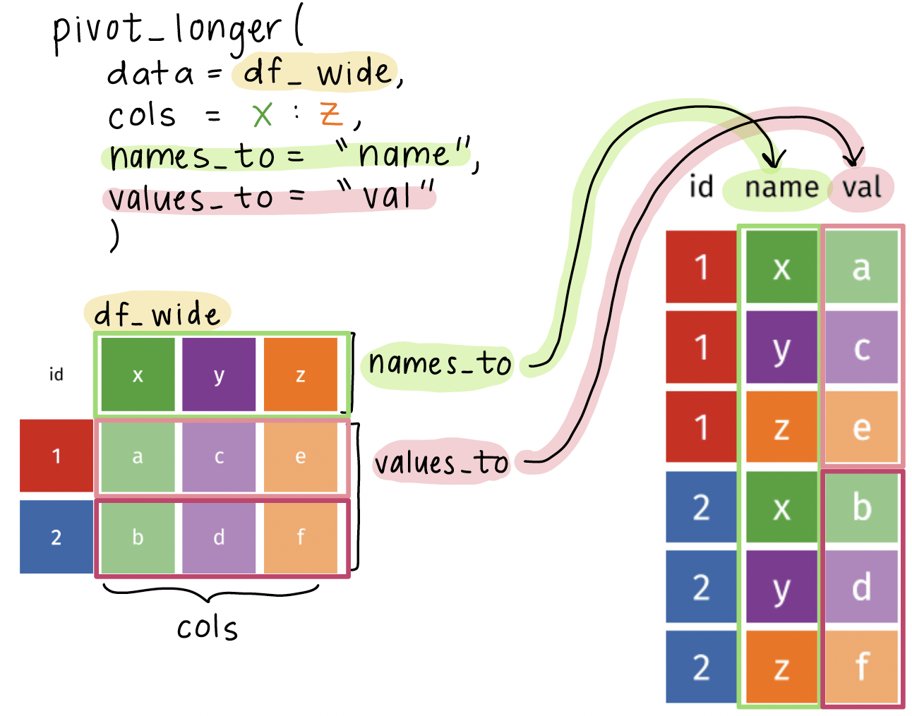

# A tibble: 6 × 4
country year cases population
<chr> <dbl> <dbl> <dbl>
1 Afghanistan 1999 745 19987071
2 Afghanistan 2000 2666 20595360
3 Brazil 1999 37737 172006362
4 Brazil 2000 80488 174504898
5 China 1999 212258 1272915272
6 China 2000 213766 1280428583Data transformation: Lengthening data
Nicky Wakim
Tidy data1

Each variable must have its own column
Each observation must have its own row
Each value must have its own cell
Let’s look at an example1 of data represented in different ways
We will look at a dataset measuring tuberculosis (TB) cases for different countries. We have information on the country, year, population, and number of TB cases:
Each column is one piece of information:
Population and cases are “types” of counts:
# A tibble: 12 × 4
country year type count
<chr> <dbl> <chr> <dbl>
1 Afghanistan 1999 cases 745
2 Afghanistan 1999 population 19987071
3 Afghanistan 2000 cases 2666
4 Afghanistan 2000 population 20595360
5 Brazil 1999 cases 37737
6 Brazil 1999 population 172006362
7 Brazil 2000 cases 80488
8 Brazil 2000 population 174504898
9 China 1999 cases 212258
10 China 1999 population 1272915272
11 China 2000 cases 213766
12 China 2000 population 1280428583We look at the rate of TB cases:
# A tibble: 6 × 3
country year rate
<chr> <dbl> <chr>
1 Afghanistan 1999 745/19987071
2 Afghanistan 2000 2666/20595360
3 Brazil 1999 37737/172006362
4 Brazil 2000 80488/174504898
5 China 1999 212258/1272915272
6 China 2000 213766/1280428583What do we do when our data are not tidy?
- In HRS data, let’s say we have data on 3 years’ worth of self-reported health (
srh)
# A tibble: 300 × 4
id `2018` `2020` `2022`
<chr> <chr> <chr> <chr>
1 557020_020 Very Good Very Good Excellent
2 551223_010 Excellent Very Good Excellent
3 556846_010 Very Good Very Good Very Good
4 556920_010 Excellent Excellent Very Good
5 551372_010 Fair Fair Fair
6 551723_010 Good Fair Good
7 558546_010 Very Good Good Good
8 557680_010 Excellent Excellent Excellent
9 552741_010 Fair Fair Fair
10 559586_010 Good Fair Good
# ℹ 290 more rowsCurrent issue: information on the year is stored within column names
The pivot_longer() function
pivot_longer(): function used to lengthen data, which means it takes multiple columns and collapses them into new columns (based on names and values)
datawill usually be fed using the pipe operator (|>)colsspecifies the columns to pivot into longer format- You can specify a range of columns using
:or usestarts_with(),ends_with(), orcontains()to select columns
- You can specify a range of columns using
names_tospecifies the name of the new column that will contain the original column namesvalues_tospecifies the name of the new column that will contain the values from the original columns
Visual of what pivot_longer() does

Using the pivot_longer() function on the HRS dataset
- We want to
- Keep the
idcolumn as is - Pivot the 2018 to 2022 columns into longer format
- Create a new column called
yearthat contains the original column names - Create a new column called
srhthat contains the values from the original columns
- Keep the
- 1
-
Feed
hrs_wide_3yrsinto thepivot_longer()function - 2
-
Use
pivot_longer()to specify the columns to pivot into longer format - 3
-
Specify the columns to pivot using
cols =and the range of columns to pivot - 4
-
Use
names_to =to move column names (2018, 2020, and 2022) to become values in a new column calledyear - 5
-
Use
values_to =to move the values from the original columns (srhvalues under 2018, 2020, and 2022) to become values in a new column calledsrh
Let’s compare the before and after!
Original, wide dataset:
# A tibble: 300 × 4
id `2018` `2020` `2022`
<chr> <chr> <chr> <chr>
1 557020_020 Very Good Very Good Excellent
2 551223_010 Excellent Very Good Excellent
3 556846_010 Very Good Very Good Very Good
4 556920_010 Excellent Excellent Very Good
5 551372_010 Fair Fair Fair
6 551723_010 Good Fair Good
7 558546_010 Very Good Good Good
8 557680_010 Excellent Excellent Excellent
9 552741_010 Fair Fair Fair
10 559586_010 Good Fair Good
# ℹ 290 more rowsNew, tidy, longer dataset:
# A tibble: 900 × 3
id year srh
<chr> <chr> <chr>
1 557020_020 2018 Very Good
2 557020_020 2020 Very Good
3 557020_020 2022 Excellent
4 551223_010 2018 Excellent
5 551223_010 2020 Very Good
6 551223_010 2022 Excellent
7 556846_010 2018 Very Good
8 556846_010 2020 Very Good
9 556846_010 2022 Very Good
10 556920_010 2018 Excellent
# ℹ 890 more rowsNotes: number of rows is 3 times longer, each individual has 3 rows of observations, each year has its own row
Wrap-up
- We don’t always get data in the format we want
- The
pivot_longer()function is a great tool to help us transform our data into a tidy format
- This will help us a lot in grouping summaries and visualizations
- For example: if we want a summary by year, we can now group by the
yearcolumn
- For example: if we want a summary by year, we can now group by the
Resources
- More information of the
pivot_longer()function can be found here
Data transformation: Lengthening data